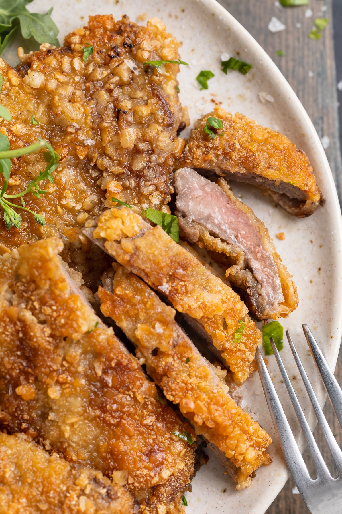

Crispy Schnitzel

What makes the recipe so good
It’s perfectly crispy and totally delicious! We use a
secret ingredient to yield the crispiest pan-fried schnitzel of all time.
It’s surprisingly easy to make! Simply coat the steaks in flour, whisked
eggs, then breadcrumbs before cooking for a few minutes per side. In three
very simple steps and
in under 20 minutes, you’ll have a perfectly cooked and delicious main
course.
This beef schnitzel recipe is healthier than most other schnitzel
recipes out there!
By pan-frying our breaded steaks, we use a fraction of the oil that
traditional recipes use.
Ingredients
- 5 thin-cut steaks
- ⅓ cup all-purpose flour
- 2 teaspoons garlic powder
- 1 teaspoon paprika
- salt
- freshly cracked black pepper to taste
- 2 large eggs
- 2 cups panko breadcrumbs
- 2 tablespoons olive oil
Instructions
-
Whisk together the all purpose flour, garlic powder, paprika, salt, and
black pepper in a bowl.
-
Dredge each steak in the flour mixture to coat, then dip in whisked
eggs, then dip and coat in panko breadcrumbs. Repeat this dipping
process for all steaks.
-
Heat olive oil in a large skillet over medium-high heat. Once oil is
hot, add in steaks in an even layer and cook about 4 minutes per side or
until golden brown. Repeat until all steaks are cooked, adding more oil
to skillet as needed. Serve immediately.
Home